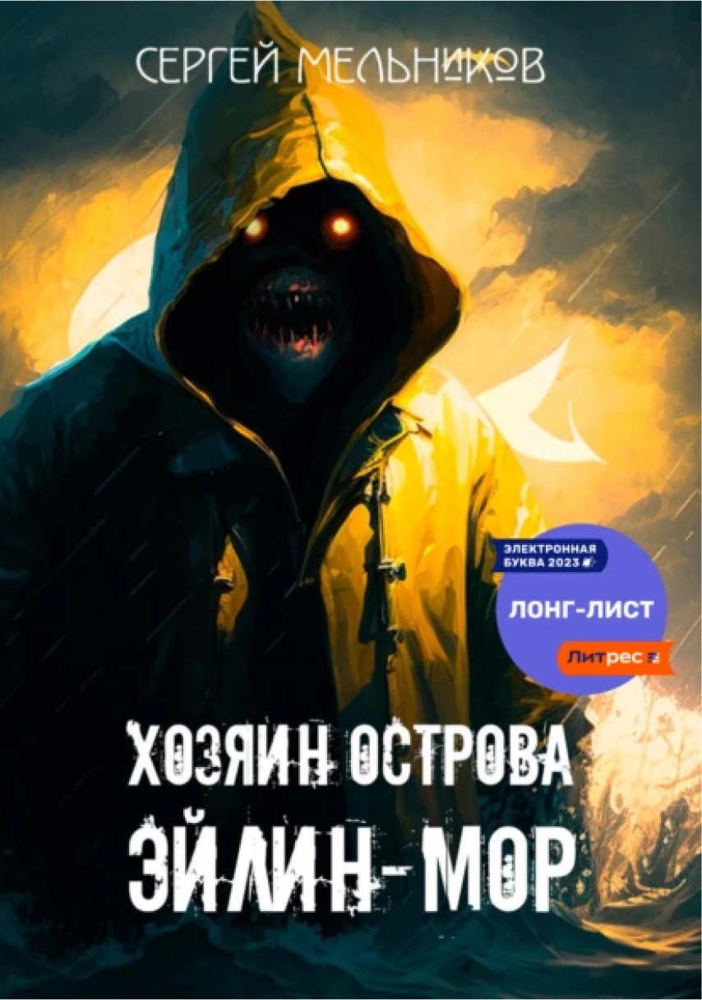

Увлекательное путешествие в разум и сердце

Хозяин острова Эйлин-Мор
Мистика,
Морские приключения,
Мрачные рассказы,
Ужасы,
Хоррор
Описание
Удивительное письмо получил комиссар на Внешних Гебридах рождественским утром 1900 года. Доставлено оно было способом столь невероятным, что, не смотря на ранний час, немедленно легло на стол адресату. Послание от его армейского друга проливало свет на недавнее исчезновение смены смотрителей маяка на крошечном островке Эйлин-Мор, но то, что таилось в тени, оказалось гораздо важнее. Я расскажу вам историю бывшего капитана торгового флота Дональда МакАртура, одного из сгинувших на Эйлин-Море, так откровенно и подробно, как рассказал её он сам. Вы спросите: "Он что, не умер?", а я отвечу: "Поверьте, смерть — не самое страшное"
-
Объем:260 стр.
-
Возрастное ограничение:16+
-
Дата написания:2023 г.
-
видеовариант
-
аудиокнига